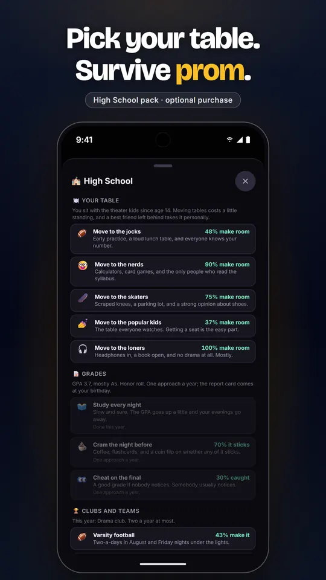
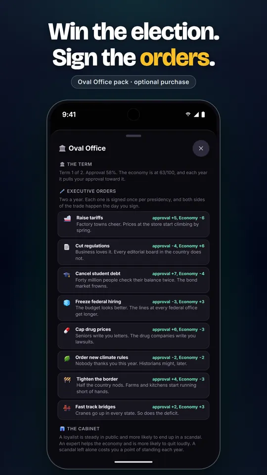
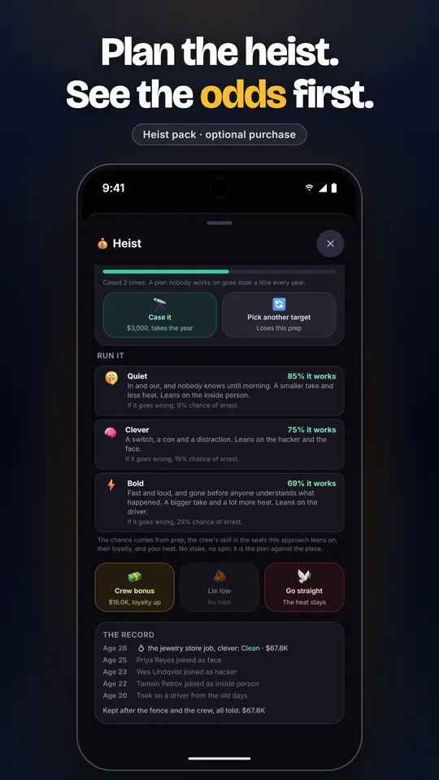
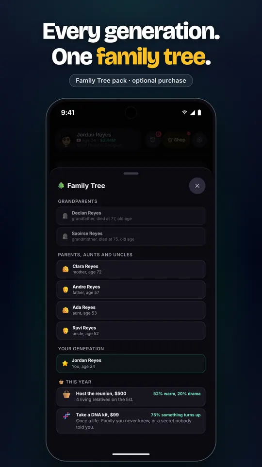
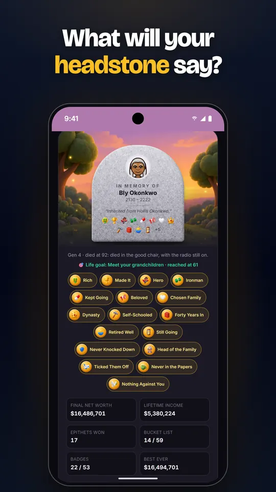
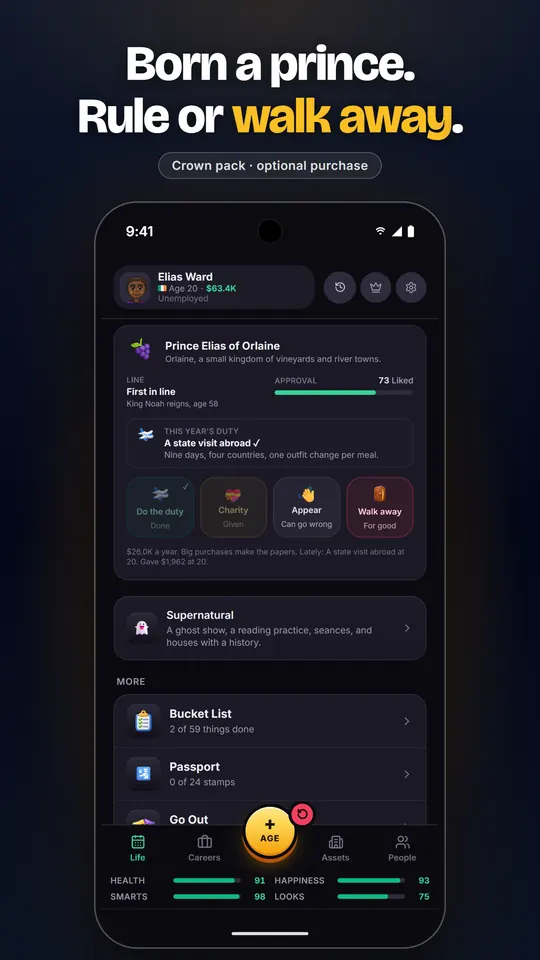

Simulador de vida en texto · iPhone y Android
LifeLine
Vive una vida, un año a la vez. Elige una carrera, forma una familia, rompe alguna regla y descubre qué dirá tu lápida.
- Funciona sin internet
- Sin cuenta
- Anuncios solo si tú quieres






Una vida entera, contada año por año
Tocas Año y pasa un año. Ocurre algo: una oferta de trabajo, un mal diagnóstico, un casero que quiere su dinero, un primo con una idea de negocio. Eliges, la decisión se queda, y el año siguiente parte de ahí. Después mueres, y el juego te cuenta cómo te fue.
Un aviso honesto: los menús y botones están en español, inglés y portugués, pero las historias del juego están escritas en inglés. Prefiero decírtelo antes que traducirlas con una máquina.
36 carreras
Del cuarto de correspondencia a la sala de juntas, del escenario al tribunal. Más de 300 decisiones de carrera en el camino.
Más de 1,000 eventos escritos a mano
Cada evento está escrito a mano, no generado. Solo aparecen cuando tienen sentido para tu vida.
Un legado que continúa
Diez caminos de prestigio, 80 epitafios y una lista de 59 cosas por hacer. Tu próxima vida recuerda la anterior.
Una nueva Vida de Hoy
Cada día trae un punto de partida nuevo, igual para todos los jugadores: un país, un origen y un reto. Juégalo y compara.
23 paquetes opcionales
Heist, Crown, Oval Office, Courtroom, High School y más. Un paquete añade una forma nueva de jugar, nunca un número más grande que el de un jugador gratuito.
Sin presión
Sin temporizadores de energía, sin cajas de botín, sin suscripción. Los anuncios son con recompensa y opcionales, nunca entre años ni en un menú.
Preguntas
¿LifeLine es gratis?
Sí. Es gratis para descargar y jugar. Los paquetes de contenido y los niveles de agradecimiento son compras opcionales. Los paquetes añaden formas nuevas de jugar, nunca un número más grande que el de un jugador gratuito.
¿Necesito una cuenta o conexión a internet?
No hay cuenta ni inicio de sesión. El juego funciona sin internet. Tus vidas guardadas se quedan en tu dispositivo.
¿En qué idiomas está?
Los menús y botones están en español, inglés y portugués. Las historias están en inglés.
¿Cómo funcionan los anuncios?
Los únicos anuncios son los que eliges ver a cambio de un bonus. No hay ventanas emergentes, ni banners, ni anuncios entre años.
¿Está en iPhone y en Android?
Sí. LifeLine está en el App Store para iPhone y en Google Play para Android.
¿Quién lo hace?
Un solo desarrollador, Sean Lynch. Si algo falla o tienes una idea, escribe a temveno@gmail.com.
Empieza una vida
Empezar toma unos segundos. Terminar toma una vida entera.
Legal y soporte
La política de privacidad y los términos de uso están en inglés: Privacy Policy · Terms of Use.
Preguntas, errores, ayuda con reembolsos o solicitudes para borrar tus datos: temveno@gmail.com. Si reportas un error, incluye el modelo de tu dispositivo y la versión del sistema.
LifeLine guarda tus partidas solo en tu dispositivo. Borrar la app elimina todo. También puedes borrar todo desde el juego: Ajustes → Borrar todos los datos.